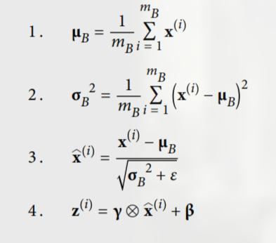
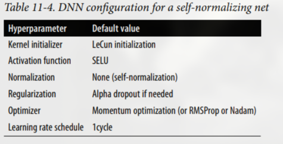
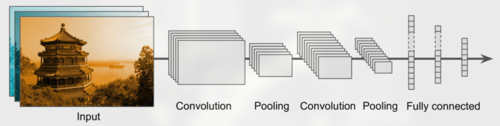

Sources
Research Articles
- How Deepseek used MultiToken Prediction
- Informer (this channel discuss and implement a lot of ML models)
- Understanding the difficulty of training deep feedforward neural networks
- A DISCIPLINED APPROACH TO NEURAL NETWORK HYPER-PARAMETERS
- Bitwise Neural Networks
- https://aman.ai/primers/ai/top-30-papers/
Fine Tuning
Hyperparameters ⇒ Variables that are constant throughout the training for example, Neural Net architecture (number of layers, neuron in layers etc…), Learning Rate, batch size, Loss function, Optimizers, Activation functions, number of iterations etc..
Parameters ⇒ variables that are fine tuned during training weights and biasis
Hyperparameters fine tuning
Number of Hidden Layers
- for complex problems, deep networks have a much higher parameter efficiency than shallow ones. They can model complex functions using exponentially fewer neurons than shallow nets, allowing them to reach much better performance with the same amount of training data.
Number of Neurons per Hidden Layer
- using the same number of neurons in all hidden layers performs just as well in most cases, or even better; plus, there is only one hyperparameter to tune, instead of one per layer.
- depending on the dataset, it can sometimes help to make the first hidden layer bigger than the others.
- a layer with two neurons can only output 2D data, so if it processes 3D data, some information will be lost
- In general you will get better performance by increasing the number of layers instead of the number of neurons per layer.
Learning rate
- learning rate is too small, then the algorithm will have to go through many iterations to converge
- learning rate is too high, you might jump across the minimum value and end up on the other side, possibly even higher up than you were before
- The curve of the Mean Squared Error (MSE) cost function for linear regression is typically a convex shape, which means it has no local minima, just one global minimum.
- eliminate models that take too long to converge
- starting with a very low learning rate (e.g., 10-5) and gradually increasing it up to a very large value (e.g., 10).
- This is done by multiplying the learning rate by a constant factor at each iteration (e.g., by exp(log(10^6 )/500) to go from 10^-5 to 10 in 500 iterations).
- If you plot the loss as a function of the learning rate (using a log scale for the learning rate), you should see it dropping at first. But after a while, the learning rate will be too large, so the loss will shoot back up: the optimal learning rate will be a bit lower than the point at which the loss starts to climb (typically about 10 times lower than the turning point).
Number of Iterations
- set a very large number of iterations but to interrupt the algorithm when the gradient vector becomes tiny that is, when its norm becomes smaller than a tiny number ϵ (called the tolerance)—because this happens when Gradient Descent has (almost) reached the minimum
- it can take O(1/ϵ) iterations to reach the optimum within a range of ϵ, depending on the shape of the cost function
Loss functions
- Root Mean Square Error (RMSE) is generally the preferred performance measure for regression tasks, in some contexts you may prefer to use another function. For example, suppose that there are many outlier districts. In that case, you may consider using the Mean Absolute Error (MAE)
- Root Mean Square Error (RMSE) corresponds to the Euclidean norm → shortest distance between two points calculated using Pythagoras’ theorem. The square of the total distance between two objects is the sum of the squares of the distances along each perpendicular co-ordinate.
- Mean Absolute Error (MAE) corresponds to Manhattan norm → sum of absolute differences between points across all the dimensions calculated using sum of the absolute differences of their Cartesian coordinates. Total sum of the difference between the x-coordinates and y-coordinates.
- Hamming Distance: Used to Calculate the distance between binary vectors.
- Minkowski Distance: Generalization of Euclidean and Manhattan distance.
- Cosine distance: measures the similarity between two vectors of an inner product space.
Accuracy / Cross Validation
- Confusion Matrix: count the number of times instances of class A are classified as class B. For example, to know the number of times the classifier confused images of 5s with 3s, you would look in the fifth row and third column of the confusion matrix.
- Precision: true positives / (true positives + false positives)
- Recall (sensitivity): true positives / (true positives + false negatives). Precision is typically used along with another metric named recall, also called sensitivity or the true positive rate (TPR). This is the ratio of positive instances that are correctly detected by the classifier.
- both precision and recall can be calculated from confusion matrix
- F1 score is the harmonic mean of precision and recall
- Binary classifiers ⇒ Receiver Operating Characteristic (ROC) curve are used that plots true positive rate / false positive rate i.e. sensitivity (recall) versus 1 – specificity, where Sensitivity is true negative rate.
- One way to compare classifiers is to measure the Area Under the Curve (AUC). A perfect classifier will have a ROC AUC equal to 1, whereas a purely random classifier will have a ROC AUC equal to 0.5
- you should prefer the PR curve whenever the positive class is rare or when you care more about the false positives than the false negatives. Otherwise, use the ROC curve.
Activation functions
- biological neurons ⇒ roughly sigmoid activation functions, but not good for artificial neurons
- different layers may learn at widely different speeds.
- this is mostly caused by activation functions (logistic sigmoid) and the weight initialization techniques (i.e., a normal distribution with a mean of 0 and a standard deviation of 1)
- vanishing gradients problem (gradients grow smaller and smaller)
- gradients often get smaller and smaller as the back propagation algorithm progresses down to the lower layers
- exploding gradients problem (gradients grow larger and larger)
- Glorot and He Initialization:
- variance of the outputs of each layer to be equal to the variance of its inputs
- number of inputs in a layer = fan-in
- number of neuron in a layer = fan-out
- Glorot initialization or Xavier initialization
- fan-avg = (fan-in + fan-out) / 2
- Normal distribution with mean 0 and variance σ^2 = 1 / fan-avg
- Or a uniform distribution between −r and + r, with r = sqrt( 3 / fan-avg )
- LeCun initialization
- when fan-avg = fan-in is used in Glorot initialization
- Normal distribution with mean 0 and variance σ^2 = 1 / fan-in
- Or a uniform distribution between −r and + r, with r = sqrt( 3 / fan-in )
- He initialization (initialization of ReLU layers and it’s variants)
- Normal distribution with mean 0 and variance σ^2 = 2 / fan-in
Initialization parameters for each type of activation function:

for the uniform distribution, just compute r = sqrt ( 3 * σ^2 )
- ReLU better than sigmoid function but suffers from dying ReLU where they only output 0, never activating that side of neural network
- Use Leaky ReLU-α (z) = max(αz, z) instead
- α = 0.2 (a huge leak) better than α = 0.01 (a small leak)
- Randomized Leaky ReLU (RReLU)
- α is picked randomly in a given range during training and is fixed to an average value during testing
- Parametric Leaky ReLU (PReLU)
- α is authorized to be learned during training
- making α an parameter instead of hyperparameter
- good for large dataset
- Exponential Linear Unit (ELU) (good but heavy to compute so use Leaky instead)
- ELU-α (z) = α * (e^z − 1) if z < 0
-
z if z ≥ 0 - α = 1 is a good start
- Scaled ELU (SELU) (conditional best)
- SELU-α (z) = λ* α * (e^z − 1) if z < 0
-
λ * z if z ≥ 0 - α = λ = 1 is a good start
-
- network will self-normalize: the output of each layer will tend to preserve a mean of 0 and standard deviation of 1 during training only if:
- input features must be standardized (mean 0 and standard deviation 1)
- LeCun normal initialization is done
- network’s architecture must be sequential
- SELU-α (z) = λ* α * (e^z − 1) if z < 0
- SELU > ELU > leaky ReLU (and its variants) > ReLU > tanh > logistic
- Batch Normalization
- zero-centers and normalizes each input, then scales and shifts the result using two new parameter vectors per layer: one for scaling, the other for shifting.
- 
- Here x are inputs of that layer and z are output x-hat is normalized vector
- To sum up, four parameter vectors are learned in each batch-normalized layer: γ (the output scale vector) and β (the output offset vector) are learned through regular backpropagation, and μ (the final input mean vector) and σ (the final input standard deviation vector) are estimated using an exponential moving average.
- clip the gradients during backpropagation so that they never exceed some threshold. This is called Gradient Clipping.
- ideal is to clip for -1 to 1 after normalizing the values i.e. the vector (0.9, 100.0) will be clipped to (0.00899964, 0.9999595)
Optimizers
- Momentum Optimization: Imagine a bowling ball rolling down a gentle slope on a smooth surface: it will start out slowly, but it will quickly pick up momentum until it eventually reaches terminal velocity (if there is some friction or air resistance).
- Gradient Descent: θ = θ – η * ∇θ(J(θ))
- gradient of the cost function J(θ) with regard to the weights (∇θ(J(θ)))
- Momentum algorithm:
- m = βm - η * ∇θ(J(θ))
- θ = θ + m
- here m is momentum vector (initially all 0).
- β is momentum which must be set between 0 (high friction) and 1 (no friction), 0.9 mostly used.
- Gradient Descent: θ = θ – η * ∇θ(J(θ))
- Nesterov Accelerated Gradient: measures the gradient of the cost function not at the local position θ but slightly ahead in the direction of the momentum, at θ + βm
- m = βm − η * ∇θ(J(θ + βm))
- θ = θ + m
- AdaGrad: Consider the elongated bowl problem again: Gradient Descent starts by quickly going down the steepest slope, which does not point straight toward the global optimum, then it very slowly goes down to the bottom of the valley. It would be nice if the algorithm could correct its direction earlier to point a bit more toward the global optimum. The AdaGrad algorithm achieves this correction by scaling down the gradient vector along the steepest dimensions.
- often stops too early when training neural networks so don’t use this
- s = s + ∇θ(J(θ)) ⊗ ∇θ(J(θ))
- θ = θ − η * ∇θ(J(θ)) ⊘ sqrt(s + ε)
- ⊗ means element-wise multiplication, ⊘ means element-wise division
- ε is a smoothing term to avoid division by zero, typically set to 10^(–10)
- this algorithm decays the learning rate, but it does so faster for steep dimensions than for dimensions with gentler slopes
- This is called an adaptive learning rate.
- RMSProp: fix for AdaGrad slowing down a bit too fast and never converging to the global optimum. RMSProp algorithm fixes this by accumulating only the gradients from the most recent iterations (as opposed to all the gradients since the beginning of training). It does so by using exponential decay in the first step.
- s = βs + (1-β) * ( ∇θ(J(θ)) ⊗ ∇θ(J(θ)) )
- θ = θ − η * ∇θ(J(θ)) ⊘ sqrt(s + ε)
- The decay rate β is typically set to 0.9
- ε is a smoothing term to avoid division by zero, typically set to 10^(-7) or 10^(–10)
- Adam Optimization (adaptive moment estimation): momentum optimization (exponentially decaying average of past gradients) + RMSProp (exponentially decaying average of past squared gradients)
- m = (β1 * m) − (1-β1) * ∇θ(J(θ))
- s = (β2 * s) + (1-β2) * ( ∇θ(J(θ)) ⊗ ∇θ(J(θ)) )
- m-hat = m / (1 - (β1^t))
- s-hat = s / (1 - (β2^t))
- θ = θ + η * (m-hat ⊘ sqrt(s-hat + ε))
- t represents the iteration number (starting at 1)
- β1 is typically initialized to 0.9, β2 is often initialized to 0.999
- ε is a smoothing term to avoid division by zero, typically set to 10^(–7) or 10^(-10)
- two variants of Adam:
- AdaMax Optimization:
- m = (β1 * m) − (1-β1) * ∇θ(J(θ))
- s = max( (β2 * s) , ∇θ(J(θ)) )
- m-hat = m / (1 - (β1^t))
- θ = θ + η * (m-hat ⊘ s)
- Nadam Optimization:
- Adam + Nesterov Accelerated Gradient
- AdaMax Optimization:
- All the optimization techniques discussed so far only rely on the first-order partial derivatives (Jacobians). The optimization literature also contains amazing algorithms based on the second-order partial derivatives (the Hessians, which are the partial derivatives of the Jacobians). Unfortunately, these algorithms are very hard to apply to deep neural networks because there are n 2 Hessians per output (where n is the number of parameters), as opposed to just n Jacobians per output. Since DNNs typically have tens of thousands of parameters, the second-order optimization algorithms often don’t even fit in memory, and even when they do, computing the Hessians is just too slow.
- RMSProp ~ Nadam > AdaMax > Adam > Nestrov > Momentum > SGD > GD
Classifiers
- Some algorithms (such as SGD classifiers, Random Forest classifiers, and naive Bayes classifiers) are capable of handling multiple classes natively.
- Others (such as Logistic Regression or Support Vector Machine classifiers) are strictly binary classifiers.
Avoiding Overfitting Through Regularization
Early stopping
stops training when the model’s performance on a validation set starts to degrade, even if training loss is still decreasing.
l1 (Lasso Regression)
Lasso (Least Absolute Shrinkage and Selection Operator) Regression adds a penalty proportional to the absolute value of the weights
- lossl1 = original_loss + λ * (∑ ∣w(i)∣) where w(i) = ith weight
- Encourages sparsity, it pushes some weights exactly to zero.
- So it’s good for feature selection, it selects only the most important features.
- λ = 0.01 is a good value
l2 (Ridge Regression)
Ridge Regression adds a penalty proportional to the square of the weights
- lossl2 = original_loss + λ * (∑ w(i)^2 ) where w(i) = ith weight
- Encourages weights to be small, but not zero
- Smooths the model and helps generalization, but doesn’t eliminate features
Elastic Net
mix l1 & l2 regularization
- loss = original_loss + λ * (∑ ∣w(i)∣) + λ * (∑ w(i)^2 ) where w(i) = ith weight
- Encourage spare and stable model
Dropout
at every training step, every neuron (including the input neurons, but always excluding the output neurons) has a probability p of being temporarily “dropped out,” meaning it will be entirely ignored during this training step, but it may be active during the next step.
The hyperparameter p is called the dropout rate
- and it is typically set between 10% and 50%
- closer to 20– 30% in RNN,
- closer to 40–50% in CNN
In practice, you can usually apply dropout only to the neurons in the top one to three layers (excluding the output layer). Suppose p = 50%, in which case during testing a neuron would be connected to twice as many input neurons as it would be (on average) during training. To compensate for this fact, we multiply outputs with 1 / (1-p)
Final Deep Neural Network Configs

- 
CNN
Instead of 1 weight per pixel, CNN uses same kernel (for example a 3x3 kernel ⇒ 9 weights) over the feature map
Fourier Series
Represent a periodic function as a sum of sinusoids (sines and cosines)
Fourier Transform
transform the signal/waveform from time domain to frequency domain frequency domain have representation tells which frequencies were used to generate that signal/waveform Represent any function (even aperiodic) as an integral of sinusoids Fourier Transform(f(t)) ⇒ F(ω) = ∫ f(t) * e^(-iωt) dt e^(-iωt) ⇒ cos(ωt) - i * sine(ωt)
Inverse Fourier Transform
f(t) = (1/ 2π) * ∫ F(ω) * e^(iωt) dω
Laplace Transform
generalized fourier transform Laplace Transform(f(t)) ⇒ F(s) = ∫ f(t) * e^(-(a+iω)t) dt where s = a+iω take s so that as F(s) → 0 as t → infinity
useful to solve ordinary differential equations (ODEs), analyzing linear time-invariant (LTI) systems, and working with control systems
Inverse Laplace Transform
f(t) = (1/ i2π) * ∫ F(s) * e^st) ds
Convolution
flipping, sliding, integrating
- Time-domain convolution ↔ Frequency-domain multiplication
- Time-domain multiplication ↔ Frequency-domain convolution
A neuron located in row i, column j of a given layer is connected to the outputs of the neurons in the previous layer located in rows i to i + fh – 1, columns j to j + fw – 1, where fh and fw are the height and width of the receptive field.
In order for a layer to have the same height and width as the previous layer, it is common to add zeros around the inputs, as shown in the diagram. This is called zero padding.
It is also possible to connect a large input layer to a much smaller layer by spacing out the receptive fields. This shift from one receptive field to the next is called the stride.
A neuron located in row i, column j in the upper layer is connected to the outputs of the neurons in the previous layer located in rows i × sh to i × sh + fh – 1, columns j × sw to j × sw + fw – 1, where sh and sw are the vertical and horizontal strides.
Filters / Kernels
A neuron’s weights in a receptive decide the filter property and which feature of the image is focused on. outputs of filters / kernels are called feature maps. n CNNs, the model learns kernels values / weights as part of training, instead of using fixed ones.
but here are some common ones for understanding
-
Edge Detection Filters
- Sobel filter (horizontal / vertical edges)
- vertical edges example:
[ 0.25 0 -0.25 ][ 0.50 0 -0.50 ][ 0.25 0 -0.25 ]
- horizontal edges example:
[ 0.25 0.50 0.25 ][ 0 0 0 ][ -0.25 -0.50 -0.25 ]
- vertical edges example:
- Prewitt filter
- Laplacian filter (second-order edges)
- Sobel filter (horizontal / vertical edges)
-
Sharpening Filters: Emphasize fine details and edges
[ 0 -1 0 ][-1 5 -1 ][ 0 -1 0 ]
-
Blurring / Smoothing Filters: Reduce noise, remove detail
- Gaussian blur (assign weights from gaussian curve)
- Average blur (every weights is 1 / number of neurons in a kernel)
-
Learned Filters in CNNs: in modern CNNs (like ResNet, VGG, etc.)
-
Depthwise Separable Filters: Used in MobileNet and other lightweight models
-
Dilated (Atrous) Filters
-
Transposed Convolution Filters: Used in upsampling, e.g., in decoders (GANs, autoencoders).
-
Input images are also composed of multiple sublayers, one per color channel.
-
There are typically three channels: red, green, and blue (RGB).
-
Grayscale images have just one channel.
Pooling Layers
subsample (i.e., shrink) the input image in order to reduce the computational load, the memory usage, and the number of parameters (thereby limiting the risk of overfitting). types:
- Max Pooling: (most common)
- take maximum of inputs in kernel
- Average Pooling:
- take average of all inputs in kernel
- Global Pooling: (Global Average/Max Pooling)
- Takes the average or max over the entire feature map.
- Often used at the end of CNNs instead of fully connected layers.
By inserting a max pooling layer every few layers in a CNN, it is possible to get some level of translation invariance at a larger scale.
Note that max pooling and average pooling can be performed along the depth dimension (across same layer feature maps) rather than the spatial dimensions (same feature map), although this is not as common.
CNN Architectures

input → convolutional layers (each one generally followed by a ReLU layer) → pooling layer → convolutional layers (each one generally followed by a ReLU layer) → pooling … → FNN + ReLUs → Softmax
AlexNet introduced competitive normalization step immediately after the ReLU called local response normalization (LRN)
- If a neuron fires very strongly compared to its neighbors, it suppresses them.
- This makes the network more selective and helps it generalize better.